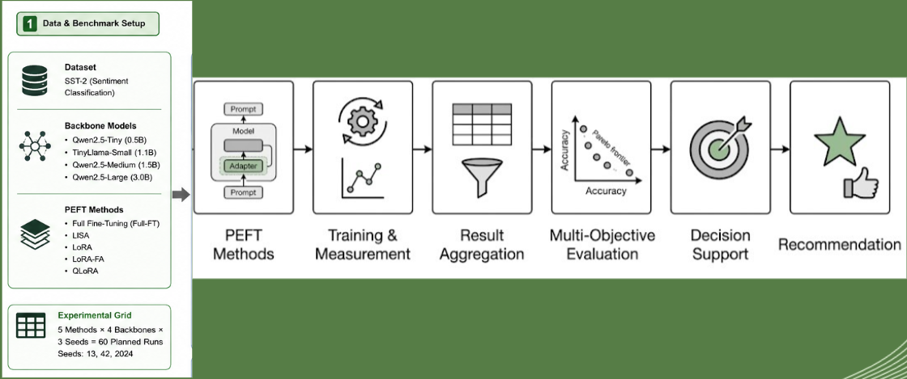

Sustainable Parameter-Efficient Fine-Tuning of Large Language Models via Predictive Zero-Shot Constraint Filtering and Green Efficiency Index (GEI).
pip install green-peft==0.1.0Test GreenPEFT's constraint filtering & GEI ranking engine live. Set your hardware constraints and preference profile to get sub-second zero-shot PEFT strategy prescriptions.
Shifting sustainable machine learning from static post-hoc benchmarking to zero-shot, constraint-aware decision support.
Specify hardware VRAM limit, carbon budget, accuracy floor, time cap, and preference profile (AHP weights).
Extract cheap pre-training metadata vector (backbone parameters, adapter rank $r$, quantization bits $q$, dataset size).
Surrogate model forecasts performance and environmental targets: Accuracy, VRAM, Energy, Carbon, Time in sub-second inference.
Filter infeasible candidates, isolate non-dominated Pareto frontier, and compute Green Efficiency Index (GEI) scores.

Evaluated across 60 execution runs on Kaggle using SST-2 sentiment classification ($k=3$ random seeds).
| Strategy | Backbone | Parameters | Accuracy (mean ± std) | Wall-Clock (s) | Peak VRAM (GB) | Energy (kWh) | Carbon (kgCO₂e) | GEI Score |
|---|---|---|---|---|---|---|---|---|
| LoRA | Qwen2.5-1.5B | 1.5B | 0.9478 ± 0.0051 | 410.12 | 12.28 GB | 0.00218 | 0.00142 | 0.895 |
| QLoRA | Qwen2.5-3B | 3.0B | 0.9484 ± 0.0042 | 520.45 | 7.45 GB | 0.00601 | 0.00391 | 0.862 |
| QLoRA | Qwen2.5-1.5B | 1.5B | 0.9434 ± 0.0089 | 380.20 | 6.78 GB | 0.00344 | 0.00223 | 0.871 |
| LoRA | TinyLlama-1.1B | 1.1B | 0.9438 ± 0.0075 | 340.10 | 9.74 GB | 0.00177 | 0.00115 | 0.884 |
| LoRA | Qwen2.5-0.5B | 0.5B | 0.9174 ± 0.0102 | 190.50 | 4.65 GB | 0.00122 | 0.00079 | 0.920 |
| LISA | Qwen2.5-0.5B | 0.5B | 0.9122 ± 0.0117 | 182.87 | 4.84 GB | 0.00324 | 0.00211 | 0.999 |
| Full-FT | Qwen2.5-0.5B | 0.5B | 0.9122 ± 0.0117 | 222.77 | 13.48 GB | 0.00382 | 0.00248 | 0.764 |
| Full-FT | TinyLlama / 1.5B / 3B | ≥ 1.1B | -- (OOM Error) | -- | > 16.0 GB | -- | -- | OOM FAILED |
Install the lightweight open-source green-peft recommendation CLI. It runs locally without PyTorch or a GPU.